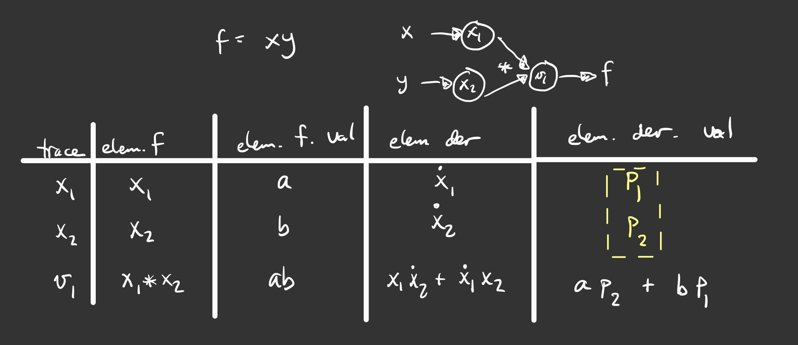
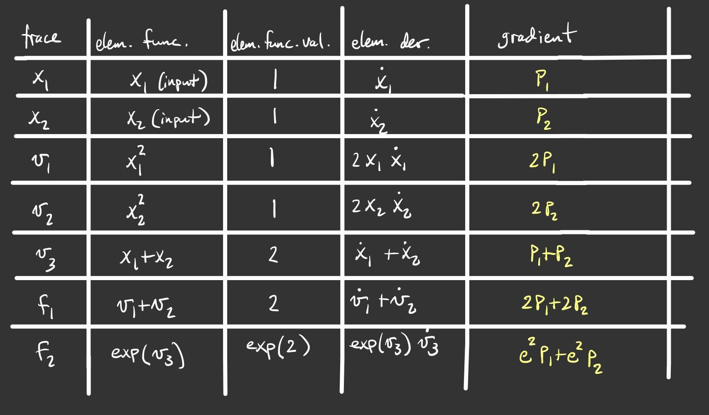
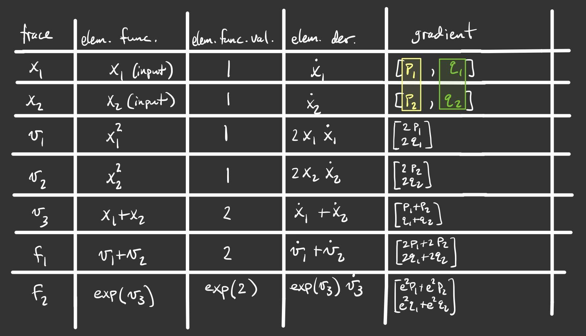

Module 2: Deeper Into Forward Mode¶
As we introduced in Module 1, the forward mode of automatic differentiation computes derviatives by decomposing functions into a series of elementary operations. We can explicitly compute the derivative of each of these elementary operations, allowing us to combine them using the chain rule to accurately compute the derivative of our function.
As we have seen, in the computational graph, nodes represent inputs and outputs of elementary operations, and the edges correspond to the elementary operations that join these nodes. The inputs to our functions become the first nodes in our graph. For each subsequent node, we can consider an evaluation and derivative up to that point in the graph, allowing us to consider the computation as a series of elementary traces.
I. The Computational Trace and Practice with the Visualization Tool¶
At each step in the graph, we can consider the current function value and derivative up to that node. Using the chain rule, we compute the derivative at a particular node from the elementary operation that created that node as well as the value and derivative of the input node to that elementary operation. We’ll return to our example from Demo 1 in a moment. For now, let’s work with a simpler function so we can see example how everything works out.
A Basic Example¶
We worked with a fairly involved function in Module 1. Now we want to understand how the graph is created and how derivatives are really computed using automatic differentiation. A very friendly function to start with is,
a. Evaluating the Function¶
We want to evaluate \(f(x)\) at a specific point. We will choose the point a=2. Throughout this documentation, we will refer to a specific point with the name a. It should be assumed that a has a specific value (e.g. 2). How do we evaluate this function?
- Replace \(x\) with the value \(2\).
- Multiply: \(2\times 2 = 4\).
- Apply the sine function: \(\sin(4)\).
- Return the value of \(f\): \(f = \sin(4)\).
b. Visualizing the Evaluation¶
We can visualize this evaluation in a graph. Each node of the graph will represent a stage in evaluation of the function. The nodes are connected together with edges. The parent value of a given node is the input to that node. The input to the entire function will be denoted by \(x_{0}\). Intermediate values will be denoted by \(v_{i}\). The evaluation graph of our simple function is shown in the figure below.

We can convert this graph picture into a trace table, which “traces” out the computational steps. The trace table for this function is shown in the following table.
| Trace | Elementary Function | Current Value |
|---|---|---|
| \(x_1\) | \(x\), input | \(2\) |
| \(v_1\) | \(2x_1\) | \(4\) |
| \(v_2\) | \(\sin(v_1)\) | \(\sin(4)\) |
This table makes a connection between the evaluation that we normally do and the graph that we used to help us visualize the function evaluation. So far there is nothing much new. These calculations are done almost automatically by our brains and by the computer. All we’ve done so far is laid things out more algorithmically.
c. Introducing Derivatives¶
Let’s add one more wrinkle. We can actually compute the derivatives as we go along at each step. The way we do this is by applying the chain rule at each step. We’ll add two more columns to the table. The first new column will represent the elementary function derivative at that step. The second new column will represent the value of the derivative at that step.
| Trace | Elementary Function | Current Value | Elementary Function Derivative | Current Derivative Value |
|---|---|---|---|---|
| \(x_1\) | x, input | \(2\) | \(1\) | \(1\) |
| \(v_1\) | \(2x_1\) | \(4\) | \(2\dot{x}_1\) | \(2\) |
| \(v_2\) | \(\sin(v_1)\) | \(\sin(4)\) | \(\cos(v_1)\dot{v}_{1}\) | \(\cos(4)\cdot 2\) |
The first thing to observe is that the derivative value of the output is precisely what we would expect it to be. The derivative of our function is \(f^{\prime} = 2\cos(2x)\). Evaluated at our chosen point, this is \(f^{\prime} = 2\cos(4)\). So whatever we did in the table seems to have worked.
We introduced some new notation: we denoted a derivative with the overdot notation. This is the common notation in forward mode. Therefore, the derivative of \(2x_{1}\) is simply \(2\dot{x}_{1}\). The dot should be interpreted as a derivative with respect to the independent variable. In the 1D case that we’re doing here, the dot means a derivative with respect to \(x\).
We used the chain rule at each step. This is most apparent in the last step where we took the derivative of \(v_{2}\) to get \(\dot{v}_{2}\), which is just \(f^{\prime}\) in this case.
Finally, there is something interesting about how we set the initial derivative in the first step. What we have done is “seeded” the derivative. Intuitively, it may help to think that in the first step we are taking the derivative of the input with respect to itself. Since \(dx/dx=1\), the derivative in the first step should just be one. However, we will see later that this is actually not necessary. If we want to get the true derivative, then it is good to seed the derivative in this way. However, automatic differentiation is more powerful than this and choosing different seed values can give valuable information. Stay tuned.
For this simple example, we can draw an accompanying graph to the original computational graph, which helps us visualize the way derivatives are carried through.

The new graph shadows the original graph. Each node in the shadow graph represents the derivative at that step. Note that the edges representing the elementary functions (in this case sine) have been differentiated. Note too how the derivatives from the previous node feed forward to the next node.
The Original Demo¶
Now we return to the original demo from the first module.
In module 1, we formed the corresponding computational graph. Now let’s use that graph to write the computational table. Each node in the table is the output of an elmentary function, whose derivative we can compute explicitly.
| Trace | Elementary Function | Current Value | Elementary Function Derivative | Derivative Evaluated at x |
|---|---|---|---|---|
| \(x_1\) | x, input | \(\frac{\pi}{16}\) | 1 | 1 |
| \(v_1\) | \(4x_1\) | \(\frac{\pi}{4}\) | \(4\dot{x_1}\) | 4 |
| \(v_2\) | \(\sin(v_1)\) | \(\frac{\sqrt{2}}{2}\) | \(\cos(v_1)\dot{v_1}\) | \(2\sqrt{2}\) |
| \(v_3\) | \(v_2^2\) | \(\frac{1}{2}\) | \(2v_2\dot{v_2}\) | 4 |
| \(v_4\) | \(-2v_3\) | 1 | \(-2\dot{v_3}\) | -8 |
| \(v_5\) | \(exp(v_4)\) | \(\frac{1}{e}\) | \(exp(v_4)\dot{v_4}\) | \(\frac{-8}{e}\) |
| \(v_6\) | \(-v_5\) | \(\frac{-1}{e}\) | \(-\dot{v_5}\) | \(\frac{8}{e}\) |
| \(v_7\) | \(x_1 + v_6\) | \(\frac{\pi}{16}-\frac{1}{e}\) | \(\dot{x_1}+\dot{v_6}\) | \(1+\frac{8}{e}\) |
The visualization tool which we installed in the first module also computes the computational table. Input the function and compare the forward mode graph to the forward model table.
Notice how the computational trace corresponds to the nodes on the graph and the edges linking these nodes. Note that the choices of labels for the traces might be different than the table we wrote by hand - compare the labels for the nodes in the graph.
Multiple Inputs¶
Now let’s consider an example with multiple inputs. The computed derivative is now the gradient vector. Instead of maintaining an evaluation trace of a scalar derivative for a single input, we instead have a trace of the gradient for multiple inputs.
In the exercises in the previous module, we practiced drawing the graph for the function
Try to draw the graph by hand. The graph you drew should have the same structure as the graph below, which was produced with the visualization tool (with the exception of possibly interchanging some of the labels).

We can also use the visualization tool to see the computational table which corresponds to the graph. Observe that the derivative in our table is now a 2 dimensional vector, corresponding to the gradient, where each component is the derivative with respect to one of our inputs. Also notice that this table does not include the columns for the elementary function or its derivative. Those columns are useful for learning how things work, but ultimately automatic differentiation does not need to store them; it only needs to store the value. Note too that the interpretation of \(\dot{x}\) must be generalized. The dot now represents a derivative with respect to one or the other input depending on the context. Lastly, the table does not include any symbolic numbers. Instead, it presents values with as much precision as the computer allows to emphasize that automatic differentiation computes derivatives to machine precision.

Note that computing the gradient for this multivariate function is done by assigning a seed vector to each input, where to find the gradient we use the standard basis vectors as seeds. We’ll discuss more about what this means automatic differentiation is computing in the next section.
II. More Theory¶
Review of the Chain Rule¶
We already saw the chain rule in one dimension and we even saw it in action in the trace table examples. Here, we build up to a more general chain rule.
a. Back to the Beginning¶
Suppose we have a function \(h(u(t))\) and we want the derivative of h with respect to t. The chain rule gives,
For example, consider h(u(t)) = sin(4t). Then h(u) = sin(u) and u = 4t. So
b. Adding an Argument¶
Now suppose that h has another argument so that we have \(h(u(t), v(t))\). Once again, we want the derivative of h with respect to t. Applying the chain rule in this case gives,
c. Accounting for Multiple Inputs¶
What if we replace t by a vector \(x\in\mathbb{R}^{m}\)? Now what we really want is the gradient of h with respect to x. We write \(h = h(u(x), v(x))\) and the derivative is now,
where we have written \(\nabla_{x}\) on the left hand size to avoid any confusion with arguments. The gradient operator on the right hand size is clearly with respect to x since u and v have no other arguments.
As an example, consider \(h = \sin(x_{1}x_{2})\cos(x_{1} + x_{2})\). Let’s say \(u(x) = u(x_{1}, x_{2}) = x_{1}x_{2}\) and \(v(x) = v(x_{1}, x_{2}) = x_{1} + x_{2}\). We can re-write h as \(h = \sin(u(x))\cos(v(x))\). Then,
and
so
d. The (Almost) General Rule¶
More generally, \(h = h(y(x))\) where \(y \in \mathbb{R}^{n}\) and \(x \in \mathbb{R}^{m}\). Now h is a function of possibly n other functions, themselves a function of m variables. The gradient of h is now given by,
We can repeat the example from the previous section to help reinforce notation. This time, say \(y_{1} = x_{1}x_{2}\) and \(y_{2} = x_{1} + x_{2}\). Then,
and
Putting everything together gives the same result as in the previous section.
The chain rule is more general than even this case. We could have nested compositions of functions, which would lead to a more involved formula of products. We’ll stop here for now and simply comment that automatic differentiation can handle nested compositions of functions as deep as we want for arbitrarily large inputs.
What Does Forward Mode Compute?¶
By now you must be wondering what forward mode actually computes. Sure, it gives us the numerical value of the derivative at a specific evaluation point of a function. But it can do even more than that.
In the most general case, we are interested in computing Jacobians of vector valued functions of multiple variables. To compute these individual gradients, we started our evaluation table with a seed vector, p. One way to think about this is through the directional derivative, defined to be,
where \(D_{p}\) is the directional derivative in the direction of p and f is the function we want to differentiate. In two dimensions, we have \(f = f(x_{1},x_{2})\) and
The seed vector (or “direction”) is \(p = (p_{1}, p_{2})\). Carrying out the dot product in the directional derivative gives,
Now here comes the cool part. We can choose p. If we choose \(p=(1,0)\) then we get the partial with respect to x. If we choose p=(0,1) then we get the partial with respect to y. This is really powerful! For arbitrary choices of p, we get a linear combination of the partial derivatives representing the gradient in the direction of p.
Simple Demo¶
To see this in action, let’s consider the function \(f(x,y) = xy\). The figure below shows the graph and the trace table evaluating the function at the point \((a,b)\). The difference between the previous versions of the table is the introduction of an arbitrary seed vector \(p = (p_{1},p_{2}\). Notice that the result is \(ap_{2} + bp_{1}\) and make sure you verify this. If we choose \(p=(1,0)\) we simply get b, which is just \(\dfrac{\partial f}{\partial x}\). Depending on how we choose the vector p we can evaluate the the gradient in any direction.
Now, you have likely noticed that choosing p=(0,1) will give a, which is \(\dfrac{\partial f}{\partial y}\). So even though it’s really cool that we can get the directional derivative, we might just want the regular gradient. This can be accomplished by first selecting the seed p=(1,0) and then selecting p=(0,1), but of course this is too much work. We don’t want to rebuild the graph for every new seed if we don’t have to. Another option is to just define as many seeds as we want and carry them along at each step. The next figure shows what this could look like for two seeds. Observe that using p=(1,0) and q=(0,1) gives the actual gradient.

Two-Dimensional Demo¶
Here’s another example to show that the forward mode calculates \(Jp\), the Jacobian-vector product. Consider the following function,
We can calcuate the Jacobian by hand just to have it in our back pocket for comparison purposes.
The Jacobian-vector product with a vector p (our seed) is,
Before we launch into our manual automatic differentiation, let’s say we want to evaluate all of this at the point (1,1). Then,
The next figure shows a table representing the computational trace for this function using an arbitrary seed. The result is precisely the Jacobian-vector product.
Similarly, the figure below depicts the same table using two arbitrary seeds. Make note of what happens when \(p=(1,0)\) and \(q=(0,1)\).
III. Exercises¶
Exercise 1: Neural Network Problem¶
Artificial neural networks take as input the values of an input layer of neurons and combine these inputs in a series of layers to compute an output. A small network with a single hidden layer is drawn below.

The network can be expressed in matrix notation as
where
is a (real) matrix of weights, and
is a vector representing output weights, \(b_i\) are bias terms and \(z\) is a nonlinear function that acts component wise.
The above graph helps us visualize the computation in different layers. This visualization hides many of the underlying operations which occur in the computation of \(f\) (e.g. it does not explicitly express the elementary operations).
Your tasks: In this part, you will completely neglect the biases. The mathematical form is therefore
Note that in practical applications the biases play a key role. However, we have elected to neglect them in this problem so that your results are more readable. You will complete the two steps below while neglecting the bias terms.
- Draw the complete forward computational graph. You may treat \(z\) as a single elementary operation. You should explicitly show the multiplications and additions that are masked in the schematic of the network above.
- Use your graph to write out the full forward mode table, including columns for the trace, elementary function, current function value, elementary function, derivative, partial x derivative, and partial y derivative.
Exercise 2: Operation Count Problem¶
Count the number of operations required to compute the derivatives in the Simple Demo and the Two-Dimensional Demo above. For each demo, only keep track of the additions and multiplications.